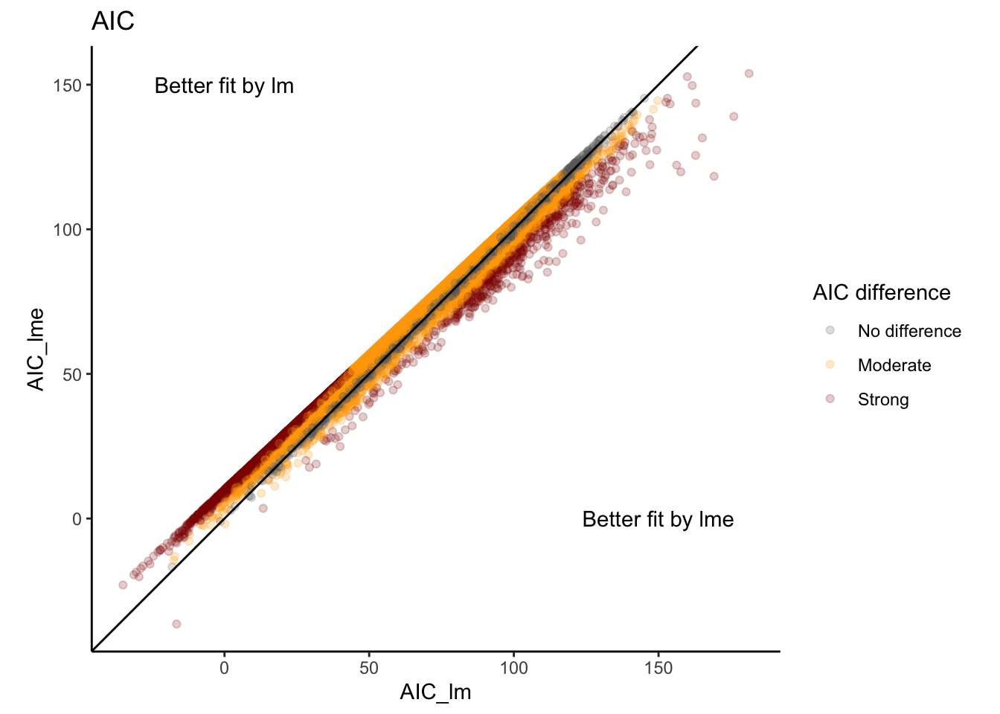

usethis::create_project(path = "1.rnaseq_tutorial", rstudio = TRUE)Bulk RNAseq differential expression analysis
Overview
One common bulk RNAseq analysis is differential expression, which determines individual genes that significantly change by your variables of interest. Most commonly, you will see linear modelings with the R package limma and binomial models with DeSeq2. These and other packages are designed to run statistical models across 1000s of genes in an efficient manor. Here, we will explore limma as well as kimma which expands the RNAseq model framework to mixed effect and covariance models.
Prior to the tutorial
Please follow the setup instructions at https://fredhutch.github.io/seatrac-hackday-2023/1.rnaseq_tutorial/1.setup.html.
R project
First, create an R project for this tutorial. When prompted, don’t save your current .RData.
Load packages
Load the following packages.
#Data manipulation and plotting
library(tidyverse)── Attaching core tidyverse packages ──────────────────────── tidyverse 2.0.0 ──
✔ dplyr 1.1.3 ✔ readr 2.1.4
✔ forcats 1.0.0 ✔ stringr 1.5.1
✔ ggplot2 3.4.4 ✔ tibble 3.2.1
✔ lubridate 1.9.3 ✔ tidyr 1.3.0
✔ purrr 1.0.2
── Conflicts ────────────────────────────────────────── tidyverse_conflicts() ──
✖ dplyr::filter() masks stats::filter()
✖ dplyr::lag() masks stats::lag()
ℹ Use the conflicted package (<http://conflicted.r-lib.org/>) to force all conflicts to become errors#Linear modeling
library(kimma)
library(limma)
set.seed(651)Data
Data description
We will be using data from
Darrah PA et al. Airway T-cells are a correlate of i.v. Bacille Calmette-Guerin-mediated protection against tuberculosis in rhesus macaques. Cell Host Microbe. 2023 Jun 14;31(6):962-977.e8. doi: 10.1016/j.chom.2023.05.006. PMID: 37267955; PMCID: PMC10355173.
Specifically, we will be focusing on the T-cell transcriptional responses to M. tuberculosis (Mtb) challenge at week 25. For simplicity, we will ignore the vaccination groups, and you may explore them during your Hack time. These data are pseudo-bulk counts from the larger single-cell data set, which we will be exploring during the second part of this tutorial.
The raw counts data were cleaned and normalized following a standard pipeline. You can learn more at https://bigslu.github.io/tutorials/RNAseq/2.RNAseq_counts.to.voom.html. The code for cleaning of these data specifically is available at https://github.com/FredHutch/seatrac-hackday-2023/blob/main/1.rnaseq_tutorial/data_cleaning_bulk.R
Copy data
A copy of the entire tutorial is on the Hack Day server at /home/seatrac-hackday-2023.
Copy the tutorial data to a new data/ directory in your R project.
dir.create("data")
list.of.files <- list.files("/home/seatrac-hackday-2023/1.rnaseq_tutorial/data/",
full.names = TRUE)
file.copy(list.of.files, "data")Load data
All counts, gene, and sample metadata are contained in a single object from the limma package.
load("data/dat_tcell.RData")
names(dat_tcell)[1] "genes" "targets" "E" "weights" "design" We access each data frame within this Elist using $. The normalized log2 CPM expression data are contained in E.
dat_tcell$E[1:3,1:2] DDF16_WK25_STIMNO_T cell DDF16_WK25_STIMYES_T cell
A1BG 0.1306417 -3.419580
A2ML1 -2.1912864 -3.419580
A3GALT2 -2.1912864 -1.834617Library and donor metadata are in targets.
dat_tcell$targets[1:3,] group lib.size norm.factors
DDF16_WK25_STIMNO_T cell 1 2283561.7 0.9200168
DDF16_WK25_STIMYES_T cell 1 5350150.0 1.0039990
DDF4E_WK25_STIMNO_T cell 1 877057.6 1.0069408
libID ptID week mtb cell
DDF16_WK25_STIMNO_T cell DDF16_WK25_STIMNO_T cell DDF16 WK25 Media T cell
DDF16_WK25_STIMYES_T cell DDF16_WK25_STIMYES_T cell DDF16 WK25 Mtb T cell
DDF4E_WK25_STIMNO_T cell DDF4E_WK25_STIMNO_T cell DDF4E WK25 Media T cell
sample.weights
DDF16_WK25_STIMNO_T cell 0.9555099
DDF16_WK25_STIMYES_T cell 0.7422811
DDF4E_WK25_STIMNO_T cell 0.4861639Gene metadata are in genes.
dat_tcell$genes[1:3,1:3] gene gene_type gene_stable_id
A1BG A1BG protein_coding ENSMMUG00000012459
A2ML1 A2ML1 protein_coding ENSMMUG00000022680
A3GALT2 A3GALT2 protein_coding ENSMMUG00000003268Voom gene-level quality weights are in weights. These were calculated with voomWithQualityWeights( ).
example.voom$weights[1:3,1:3] [,1] [,2] [,3]
[1,] 0.7585106 0.8274172 1.5710160
[2,] 0.5288184 0.5555010 0.9553991
[3,] 0.7259811 0.7906774 1.5015908And finally, the null model used in voom normalization is found in design.
example.voom$design[1:3,]lib1 lib2 lib3
1 1 1 Introduction to linear modeling
This tutorial assumes some familiarity with R and statistical modeling. You can find a quick intro relevant to RNA-seq data in Intro to linear modeling.
Modeling in limma
Simple linear regression in limma
limma take model inputs as a model matrix. This matrix encodes all the variables from the formula as 0 for N and 1 for Y. For example, here is the model matrix for the formula ~ mtb
mm_limma <- model.matrix(~ mtb, data=dat_tcell$targets)
head(mm_limma) (Intercept) mtbMtb
DDF16_WK25_STIMNO_T cell 1 0
DDF16_WK25_STIMYES_T cell 1 1
DDF4E_WK25_STIMNO_T cell 1 0
DDF4E_WK25_STIMYES_T cell 1 1
DDF4N_WK25_STIMNO_T cell 1 0
DDF4N_WK25_STIMYES_T cell 1 1Be careful with variable order! Note that we only see one level for each variable: Mtb for the mtb variable. This shows that the Mtb samples are being compared to the reference level (which is
mtb == "Media"). The reference is determined alphabetically if the variable is a character and by level if the variable is a factor. So, if you want a different order than alphabetical, you need to format your variables as factors and set the appropriate order.
Once we have a model matrix, we fit the model and estimate P-values.
#Fit model
fit_limma <- lmFit(object = dat_tcell$E,
design = mm_limma,
weights = dat_tcell$weights)
#Estimate significance
efit_limma <- eBayes(fit = fit_limma)These outputs contain a lot of information. We can pull out the most commonly used pieces with topTable. By default, this gives you the 10 most significant genes across the entire model.
#Extract results
fdr_limma <- topTable(fit = efit_limma)Removing intercept from test coefficientshead(fdr_limma) logFC AveExpr t P.Value adj.P.Val B
PLXDC2 4.192477 6.786156 13.91593 1.083979e-15 1.218267e-11 25.45526
PLCB2 3.323085 6.618024 13.67945 1.790385e-15 1.218267e-11 24.99951
CLEC12A 3.679747 5.901780 12.90214 9.731346e-15 4.414463e-11 23.21073
JUND 1.568763 7.774542 12.66888 1.639179e-14 5.576896e-11 23.04095
ARHGDIB 1.829897 8.873965 12.09001 6.146497e-14 1.672954e-10 21.75189
LST1 2.556890 6.774452 11.68693 1.580100e-13 3.583929e-10 20.78367With some additional parameters, we can get gene results for individual variables. This is the same for this simple model but would differ if you had multiple variables of interest, covariates, interaction term, etc.
fdr_limma_mtb <- topTable(fit = efit_limma,
coef = "mtbMtb", number = Inf)
head(fdr_limma_mtb) logFC AveExpr t P.Value adj.P.Val B
PLXDC2 4.192477 6.786156 13.91593 1.083979e-15 1.218267e-11 25.45526
PLCB2 3.323085 6.618024 13.67945 1.790385e-15 1.218267e-11 24.99951
CLEC12A 3.679747 5.901780 12.90214 9.731346e-15 4.414463e-11 23.21073
JUND 1.568763 7.774542 12.66888 1.639179e-14 5.576896e-11 23.04095
ARHGDIB 1.829897 8.873965 12.09001 6.146497e-14 1.672954e-10 21.75189
LST1 2.556890 6.774452 11.68693 1.580100e-13 3.583929e-10 20.78367The variables included are:
logFC: log fold change. The sign is relative to your reference. For example, negative logFC for mtbMtb means Mtb minus Media is negative and thus, expression is lower in Mtb-infected samples.AveExpr: average expression across all samplest: test statistic for significanceP.Valueadj.P.Val: FDR adjusted P-valueB: beta coefficient
With some tidyverse manipulation, we can get results for all genes and variables in one table. Or you can use the kimma function extract_lmFit and skip the coding! This also renames the columns to match kimma’s output for easier model comparison later on.
fdr_limma <- extract_lmFit(design = mm_limma, fit = efit_limma)
names(fdr_limma)[1] "lm" "lm.fit"head(fdr_limma$lm) model gene variable estimate pval FDR t B
1 limma PLXDC2 mtbMtb 4.192477 1.083979e-15 1.218267e-11 13.91593 25.45526
2 limma PLCB2 mtbMtb 3.323085 1.790385e-15 1.218267e-11 13.67945 24.99951
3 limma CLEC12A mtbMtb 3.679747 9.731346e-15 4.414463e-11 12.90214 23.21073
4 limma JUND mtbMtb 1.568763 1.639179e-14 5.576896e-11 12.66888 23.04095
5 limma ARHGDIB mtbMtb 1.829897 6.146497e-14 1.672954e-10 12.09001 21.75189
6 limma LST1 mtbMtb 2.556890 1.580100e-13 3.583929e-10 11.68693 20.78367
AveExpr
1 6.786156
2 6.618024
3 5.901780
4 7.774542
5 8.873965
6 6.774452Paired sample design in limma
limma uses a shortcut to model paired sample designs. Unlike a true mixed effect model, limma estimates the mean correlation of gene expression between pairs. This is an approximation of a mixed effects model. While it runs very fast, it assumes the paired design impacts all genes equally
Using the same model as before, we can calculate the mean correlation.
consensus.corr <- duplicateCorrelation(object = dat_tcell$E,
design = mm_limma,
block = dat_tcell$targets$ptID)
consensus.corr$consensus.correlation[1] 0.3554838You can then incorporate this estimate into the limma model. We will not do not here, because we now have full mixed effects models in kimma.
Modeling in kimma
kimma supports more flexible modeling of RNA-seq data including simple linear and linear mixed effects models with co-variates, weights, random effects, and covariance matrices. Let’s run the same models as we did with limma.
Note that kimma is slower than limma, because it runs a true mixed effects model as well as can run multiple models at once. It can be run on multiple processors to increase speed.
Here, we stick to 4 processor to not overload the server. If you’re running this locally, you can omit the processors option and kimma will automatically run on all processors minus 2.
fit_kimma <- kmFit(dat = dat_tcell,
model = "~ mtb + (1|ptID)",
use_weights = TRUE,
run_lm = TRUE, run_lme = TRUE,
metrics = TRUE,
processors = 4)lm model: expression~mtblme/lmerel model: expression~mtb+(1|ptID)Input: 30 libraries from 15 unique patientsModel: 30 librariesComplete: 13609 genesFailed: 0 genesThe kimma output contains 4 data frames: one for each model’s results (like limma’s topTable) and one for each model’s fit metrics, which unlike limma, contains several fit metrics.
names(fit_kimma)[1] "lm" "lme" "lm.fit" "lme.fit"head(fit_kimma$lm)# A tibble: 6 × 8
model gene variable df statistic estimate pval FDR
<chr> <chr> <chr> <int> <dbl> <dbl> <dbl> <dbl>
1 lm A1BG (Intercept) 28 -2.13 -0.491 0.0422 0.0529
2 lm A1BG mtbMtb 28 -1.35 -0.430 0.188 0.312
3 lm A2ML1 (Intercept) 28 -1.49 -0.451 0.147 0.169
4 lm A2ML1 mtbMtb 28 -0.960 -0.401 0.345 0.485
5 lm A3GALT2 (Intercept) 28 -3.22 -0.738 0.00321 0.00462
6 lm A3GALT2 mtbMtb 28 -0.706 -0.223 0.486 0.618 head(fit_kimma$lm.fit)# A tibble: 6 × 7
model gene sigma AIC BIC Rsq adj_Rsq
<chr> <chr> <dbl> <dbl> <dbl> <dbl> <dbl>
1 lm.fit A1BG 0.856 83.3 87.5 0.0612 0.0277
2 lm.fit A2ML1 1.12 99.5 104. 0.0319 -0.00268
3 lm.fit A3GALT2 0.853 83.0 87.2 0.0175 -0.0176
4 lm.fit A4GALT 2.18 87.6 91.8 0.109 0.0771
5 lm.fit AAAS 0.640 35.1 39.4 0.00395 -0.0316
6 lm.fit AACS 0.853 49.1 53.3 0.00262 -0.0330 Picking a best fit model
We can now look at metrics like AIC where we see that best fit varies by gene (which is very common)…
fit_kimma_all <- full_join(fit_kimma$lm.fit,
fit_kimma$lme.fit,
by = c("gene"),
suffix = c("_lm","_lme")) %>%
#create color variable
mutate(diff = AIC_lme-AIC_lm,
diff_col = case_when(diff<=-7 | diff>=7 ~ "Strong",
diff<=-2 | diff>=2 ~ "Moderate",
TRUE~"No difference"),
diff_col = factor(diff_col,
levels=c("No difference",
"Moderate","Strong")))
fit_kimma_all %>%
ggplot(aes(x = AIC_lm, y = AIC_lme)) +
geom_point(alpha = 0.2, aes(color=diff_col)) +
geom_abline(intercept = 0, slope = 1) +
theme_classic() +
coord_fixed() +
labs(title = "AIC", color="AIC difference") +
scale_color_manual(values=c("grey40","orange","darkred")) +
annotate("text", x=150, y=0, label="Better fit by lme")+
annotate("text", x=0, y=150, label="Better fit by lm")
and the overall AIC mean and total are somewhat lower for the simple linear model without paired design.
#Mean
mean(fit_kimma$lm.fit$AIC)[1] 65.0011mean(fit_kimma$lme.fit$AIC)[1] 67.92518#Sum
sum(fit_kimma$lm.fit$AIC)[1] 884600sum(fit_kimma$lme.fit$AIC)[1] 924393.8In general, differences in mean AIC < 2 show that either model is appropriate, differences from 2 to 7 are moderate evidence for the lower AIC model, and differences greater than 7 are strong evidence for the lower AIC model.
So in this case, which model do we go with? AIC slightly supports the simple model but our study design is paired… Always use your scientific reasoning first! If you know that there is a study design feature or confounding covariate, keep them in the model even if the AIC says otherwise. Be smarter than your data!
For this experiment, we know we have a paired design so either limma with duplicateCorrelation or kimma with run.lme is appropriate. In our experience, a true mixed effects model in kimma yields fewer false positive genes when you have a paired design, even if metrics like AIC do not support it as the best fit model.
Significant genes
Here, we summarize how many genes are significant at different FDR cutoffs. We see a strong Mtb effect.
summarise_kmFit(fit_kimma$lme)# A tibble: 3 × 7
variable `fdr<0.05` `fdr<0.1` `fdr<0.2` `fdr<0.3` `fdr<0.4` `fdr<0.5`
<fct> <int> <int> <int> <int> <int> <int>
1 (1 | ptID) 958 2117 3526 4675 5667 6548
2 mtb 6884 7759 8777 9589 10186 10827
3 total (nonredund… 7242 8485 9822 10782 11417 12011Because there are so many significant genes, it can be difficult to interpret results. You’ll see further methods this afternoon!